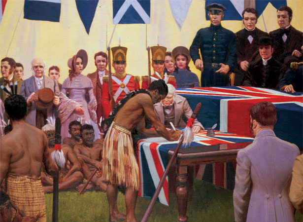
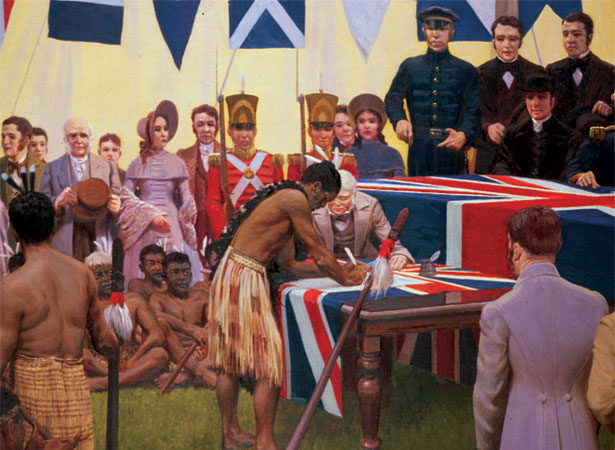

Detailed Information
The Treaty of Waitangi is New Zealand’s founding document. It takes its name from the place in the Bay of Islands where it was first signed, on 6 February 1840. This day is now a public holiday in New Zealand. The Treaty is an agreement, in Māori and English, that was made between the British Crown and about 540 Māori rangatira (chiefs).

 
